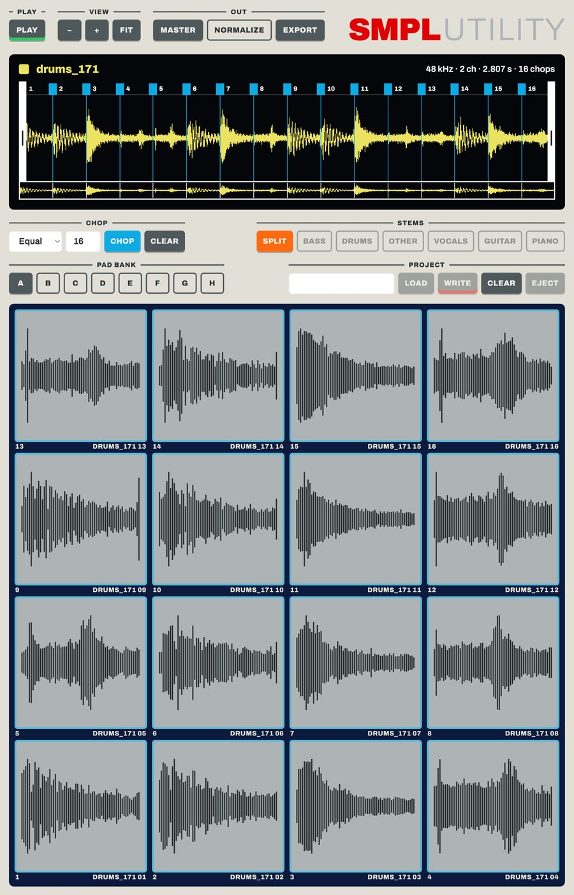

Gazillion Industries · SMPLUTILITY 1.0 · Setup and use
Set up
Install
Mac: open the installer and follow it. SMPLUTILITY goes in Applications. Windows: run the setup file. Apple Silicon Macs, macOS 12 or later. Windows 64-bit.Activate
The first time SMPLUTILITY opens, it asks for your license key. It is on your download page and in your receipt email. Copy it, press PASTE, then ACTIVATE. Activation goes online once. After that it runs offline on that computer.Card and cable
Put a microSD card in the MPC Sample. Connect the MPC Sample to your computer with a USB-C cable.Save your project to the card
On the MPC Sample, hold SHIFT and press PAD 16 (PROJECT). Choose Save Project and save it to the microSD card. SMPLUTILITY shows the projects saved on the card.SD Card Access
In the same Project menu, choose SD Card Access. If your menu has no SD Card Access, update the MPC Sample first: with it connected, open mpc-sample.local in a browser.Connected
The lamp beside MPC SAMPLE at the bottom left turns green. The sounds on the card open in LIBRARY and your newest project lands on the pads.

Use
Sounds in
LIBRARY lists the sounds on the card. OPEN picks any folder on your computer. Click a sound and it opens on the screen. WAV, MP3, AIFF, FLAC and OGG.
Chop
Pick Equal, Auto or Manual, then press CHOP. In Manual, CHOP starts playback: press Enter or M to drop a chop point as it plays.
Double-click the waveform to add a chop point. Double-click a point to remove it, drag it to move it. Click a chop to hear it. Space plays and stops.
Pads
Drag a chop from the waveform to a pad. Drag the grip beside the name to send the whole sound: a chopped sound fills the pads that follow.
Drag a sound from the library to a pad. Drag one pad to another. Right-click a pad to clear it. The pad bank keys switch banks A to H.
Stems
SPLIT separates the sound into bass, drums, vocals, guitar, piano and other. Each stem is a switch. Turn stems off and the screen holds the mix of what is left, ready to chop and drag like any sound.
FX
The FX tab lists Gazillion plug-ins. The ones installed and activated on this computer load here. HEAR plays the sound through them. PRINT puts the effect into the sound.
Out
MASTER masters what is between the trim handles. EXPORT saves your chops as WAV files in a folder you pick. With NORMALIZE on, each file is normalized.
Back to the MPC Sample
Name the project and press WRITE. The same name updates that project. A new name makes a new one. SMPLUTILITY ejects the card when it is done.
On the MPC Sample, press B1 to leave SD Card Access, then load the project from the Project menu.
Project keys
LOAD lists the projects on the card. CLEAR empties the pads. EJECT hands the card back without writing.